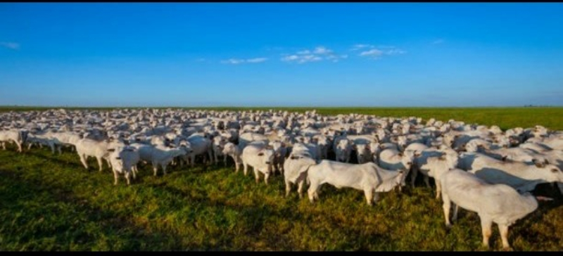

1 / 8

1
2 / 8
2
3 / 8

3
4 / 8

4
5 / 8

5
6 / 8

6
7 / 8

7
8 / 8

8
Kissan GPT is a multilingual AI Agricultural Assistant. Introducing Kissan GPT, an advanced multilingual AI chatbot engineered to provide farmers with personalized, voice-based assistance for all their agricultural needs.
Agricoop site is maintained by the government of India to take apprehension in Agriculture & Horticulture Sector under Ministry of Agriculture. The site deals with: Agriculture Census, Agricultural Marketing, Credit to farmers, Crops & Drought Management, Horticulture, Integrated Nutrient Management, Macro Management, Natural Resources Management, Plant Protection and upbringing of Rashtriya Krishi Vikas Yojana.
ArgriWatch is a private site managed by Indian Agribusiness Systems Pvt. Ltd. It is a group formed by young trade professionals who have had a long involvement in Indian Agribusiness Sector. The Company aims to shorten the communication gap between various Agricultural Commodities by providing latest and accurate information to the farmers, Traders, Processors of Agricultural Outputs, Suppliers of Agricultural Inputs, etc.
farmer.gov.in portal is designed mainly for farmers by the Govt. of India, so that farmer is able to get all Agriculture relevant information on specific subjects around his village, block, district or state. Other objective of this site is to give information in the form of text, SMS, email and audio/video in the language farmer can understands. Through this site farmers are also able to ask specific queries as well as give valuable feedback.
rmlglobal.com RML (Reuters Market Light) is an award-winning private business solution firm that helps farmers to gain maximum profits through their crops. With coverage of more than 450 crop varieties and 1300 markets, RML is a preferred choice for over 1.4 million farmers in 50,000 villages across 18 states in India. RML was launched in India in the state of Maharashtra on 1 Oct, 2007 by the union minister of agriculture of India, Mr. Sharad Pawar.
krishijagran.com visions to emancipate farmers economical conditions alongwith rendering a platform where they can get all the knowledge and wisdom about the progress that agriculture witnesses. KJ serves as an interface among the Industry, Government, Research Institutions, Farming Communities and NGOs. You can get Information regarding agro-events, farm mechanizations, product launches, commodities etc. through Krishi Jagran’s portal.
agmarknet.nic.in is run by department of Agriculture & Co-operation (DAC) to implement agricultural marketing policies and programmes of the Government of India. The site shows the latest prices and arrival of different agricultural commodities that are received from the Agricultural Produce Market Committee (APMCs) of different States and are directly uploaded on this AGMARKNET portal.
isapindia.org Indian Society of Agribusiness Professionals (ISAP) is a not-for-profit organization incorporated in 2001. It is one of the largest networks of agriculture and allied sector professionals in India. ISAP acts as a bridge between this network of Indian agricultural community and various other stake- holders of this sector (Governments, International Organizations, Bilateral Developmental agencies, Corporate, Academia, and End-users) through large-scale projects on the field.
fert.nic.in is managed by Department of Fertilizers run by Ministry of Chemicals & Fertilizers, headed by a Cabinet Minister. The key aim of Department of Fertilizers is to ensure sufficient and timely availability of fertilizers at affordable prices to farmers for maximizing agricultural production in the country. The site showcases planning, promotion and development of the Fertilizers Industry, import and distribution of fertilizers and management of financial assistance by way of subsidy/concession for indigenous and imported fertilizers.
agriquest.info is focused on providing enlarge information on agriculture and timely updating of new technologies to the farmers or traders which will helps agricos to cop off food production in accordance with world population growth.
krishiworld.com is a private blog that educate farmer with the latest agro information and to use new technique to solve the inflexible farming problem. the blog gives us article on Biotechnology, Crops, Soils, Fertilizers, Weather, Home Gardening, Marketwatch and Farm Equipment.